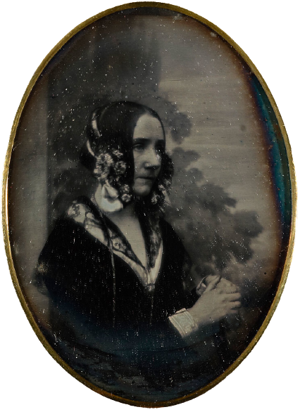

Augusta Ada King, better known as Ada Lovelace, was an English mathematician and writer best known for her work on the Analytical Engine proposed by Charles Babbage.
1833Ada Lovelace met Charles Babbage for the first time. After the first meeting, Charles Babbage invited her to see the Difference Engine. She was fascinated by the machine.
1842Ada Lovelace translated an article on Babbage's Analytical Engine by Luigi Menabrea. She appended notes explaining how the Analytical Engine differed from the Difference Engine.
1844Ada Lovelace worked on other projects after her work with Babbage. She commented to a friend about her desire to build a mathematical model ("a calculus of the nervous system").
1851Ada Lovelace wrote to her mother, mentioning she was working on the relationship between maths and music.